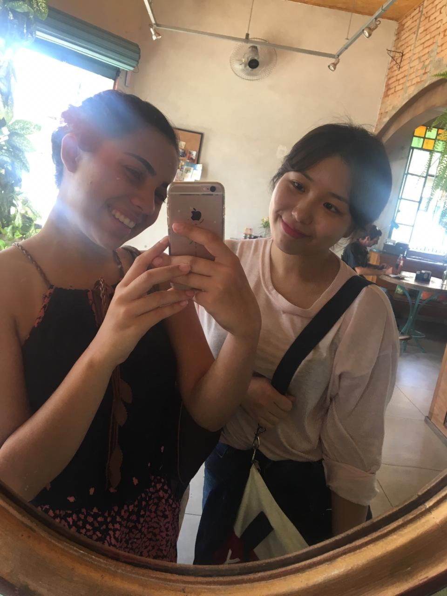

About me
"문보라"에 대해
- 좌우명은 「If not now, Then when?」 입니다.
한살씩 나이가 들면서 새로운 것에 대한 두려움이 생겨가는데,
저는 제 자신이 무엇인가를 두려워 하는 모습이 싫기에
지금이 아니면 언제 할 지 모른다는 생각으로
고민하기보다는 일단 하는 편입니다.
디자인
- MD로 근무하며 Photoshop을 꾸준히 사용해왔으며
상단 배너 제작,
소셜 커머스 행사용 이미지 제작도 했었기에 다양한 작업이 가능합니다 - Illustrator툴에 대한 기초 작업이 가능합니다
문서작성, 그 외
- 엑셀 및 워드 문서작성과 함수의 사용이 가능합니다.
- MD및 온라인 담당으로 근무했기에 이커머스의 전체적인 흐름을 파악하고 있습니다.
My exprience

나의 다양한 여행 경험
넓은 세상을 만나보고 싶어서 혼자 떠난 여행과 사진 일부입니다!
일본부터 시작해 여러 동남아 국가, 미국, 두바이, 브라질 등 평소 궁금했던 나라들을 여행하며 다양한 사람들을 만나고 많은 경험들을 쌓을 수 있었고, 많은 것들을 배우고 느낄 수 있었습니다.
📍가장 좋아하는 여행지
- 도쿄 아키하바라전세계 여러 사람들이 모여 애니메이션을 구경하는 것이 신기하고 재밌었습니다. 그리고 맛집도 많아서 제가 정말 좋아합니다!
📍가장 특이했던 여행지
- 브라질 상파울루한 여름의 크리스마스 분위기는 잊을 수 없을 것 같습니다.
많은 사람들이 광장에 나와 크리스마스를 기념하며 쌈바 댄스를 추며 즐기는 열정이 너무 좋았고 특이했습니다.
나의 다양한 업무 경험
이랜드 슈펜에서 근무할 때의 사진들입니다.
자기소개서의 내용처럼 약 4000건 이상의 주문이 들어온 적이 있습니다. 그 때 찍은 사진들과 제가 실제로 상품 찾기 위해 거의 매일 확인했던 지하창고와 매장 내 창고입니다. 몸이 힘들 때가 많았지만, 보람찬 경험이였고 직업적인 가치를 느낄 수 있었던 즐거운 경험이였습니다.
📍가장 힘들었던 경험
- 전산재고와 실재고가 맞지 않았을 때이미 주문이 들어온 상태라서 여름과 겨울에 지하창고에 내려가서 100박스 이상을 뒤져 찾아낸 경험이 가장 힘들었던 경험입니다. (+택배사의 파업으로 고객 클레임까지 늘어 두 배로 힘들기도 했습니다.)
📍가장 뿌듯했던 경험
- 배송 실수가 없어 클레임이 가장 적었던 온라인 행사주문이 약 3000건 정도 들어왔던 행사입니다. 행사 전 매장 재고와 물류센터 재고 확인을 다 끝냈고, 다른 직원들에게 협업 요청 등등으로 클레임을 최소화해서 마무리 할 수 있었습니다.